Elf silhouetten op dezelfde schaal (1 hokje = 50 mm). De operator zit links. Het label Rams / TE staat bij de vormen die bij Braun en Teenage Engineering passen; I, J en K zijn daarvoor nieuw getekend. Kies er twee, en een kleurrichting onderaan.
Gekozen vorm · 15 november 2026
M1 · SB · K1 · D2
Platte G-romp met schermklep, uitklapsteun met tandlat, antraciet met walnoot, lijst 12 mm en een voet die 16 mm terugloopt. De vorm is af; hierna komt het technische ontwerp. Het bovenpaneel wacht op de proefstroken (graveerplaat of acryl).
Scherm: klep met walnoten zijkanten op een uitklapsteun met zaagtand-lat, vier standen.
Stap 5 · details · jouw keuze K1
Hoe dik de walnoten lijst, hoe ver de voet terug
De bovenkant van de lijst blijft op dezelfde hoogte, net boven het dek. Wat wisselt is hoe ver het hout naar beneden loopt en hoe ver de voorwand en zijwanden naar de voet teruglopen.
D1
Lijst 8 mm, terugloop 8 mm
schuin van voren
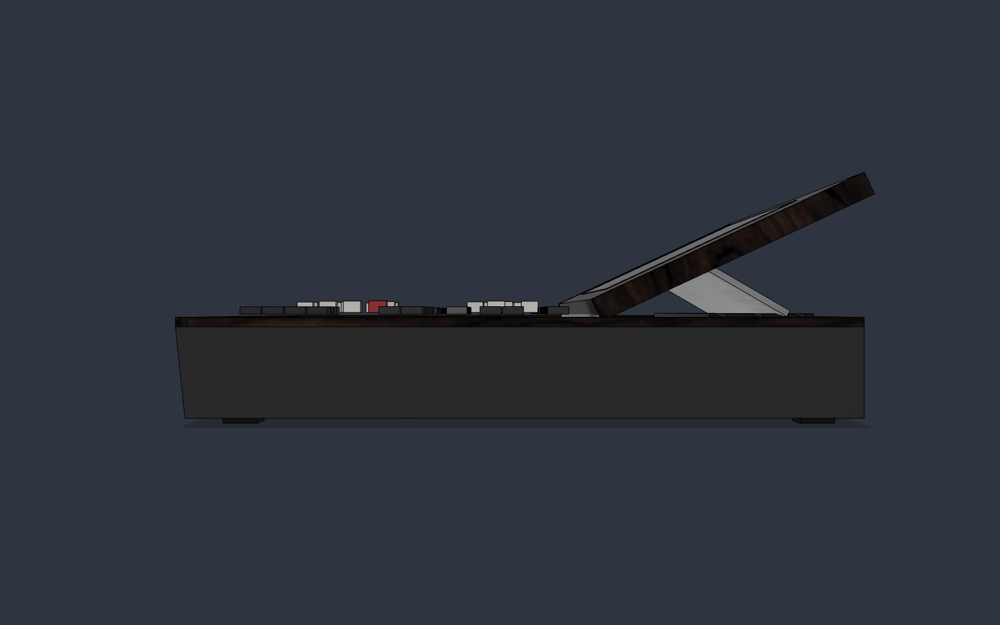
zijaanzicht
Een dunne houten rand; de romp is vooral een zwart blok.
De terugloop is net zichtbaar, als een schaduwlijn onderaan.
D2
Lijst 12 mm, terugloop 16 mm
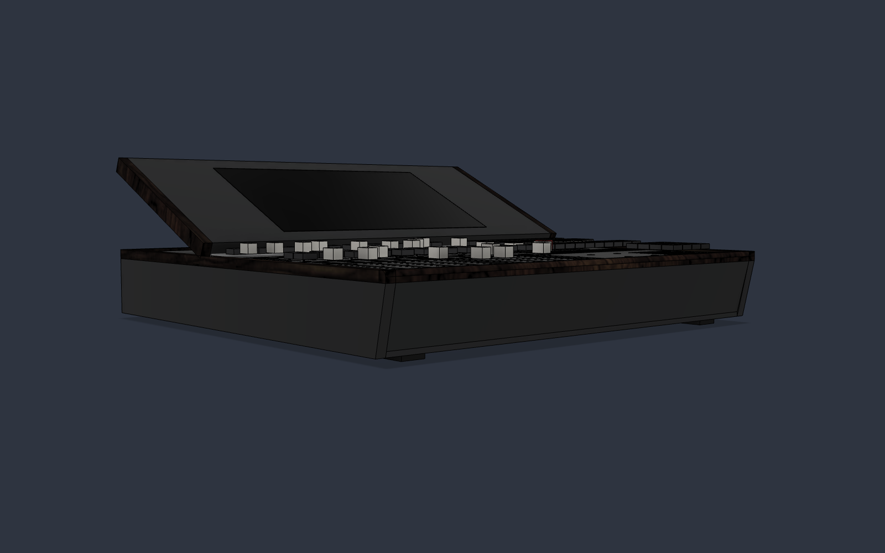
schuin van voren
zijaanzicht
De lijst van G zoals je hem mooi vond, met de voet wat verder terug.
De romp lijkt lichter: hij zweeft een beetje boven de tafel.
D3
Lijst 20 mm, terugloop 26 mm
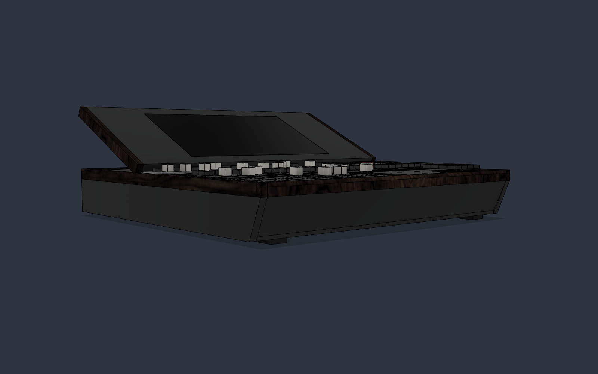
schuin van voren
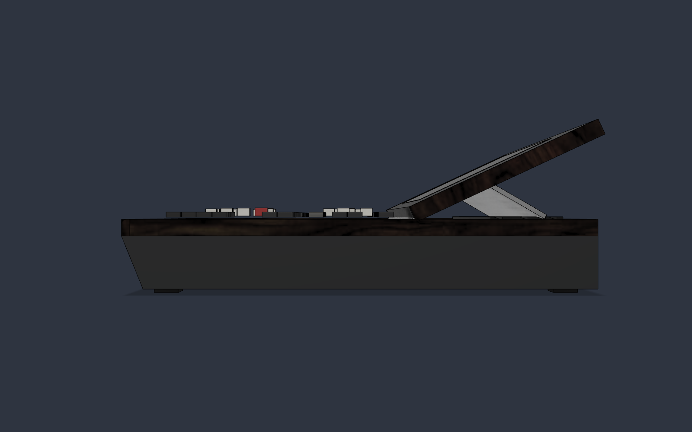
zijaanzicht
Het hout wordt een echte band rondom; meer meubel, warmer.
De sterke terugloop maakt de voorkant een schuin vlak, zoals bij oude Braun-radio's.
Stap 4 · kleur en materiaal · M1 met SB
Drie kleurrichtingen op dezelfde desk
Het dek is in alle drie zwart met witte opschriften, zoals de graveerplaat het zou geven. Romp, lijst, toetskappen en faderknoppen wisselen. Eén accentkleur per variant: de GM-fader en de rij I P C G B E S FX.
K1
Antraciet en walnoot
donkere toetsen, witte faderknoppen, rode GM
Rustig en studio-achtig; de desk verdwijnt in een donkere regieruimte.
Witte faderknoppen zie je in het donker het best, en de toetsen zijn meer verlicht dan van kleur.
K2
Braun-grijs en walnoot
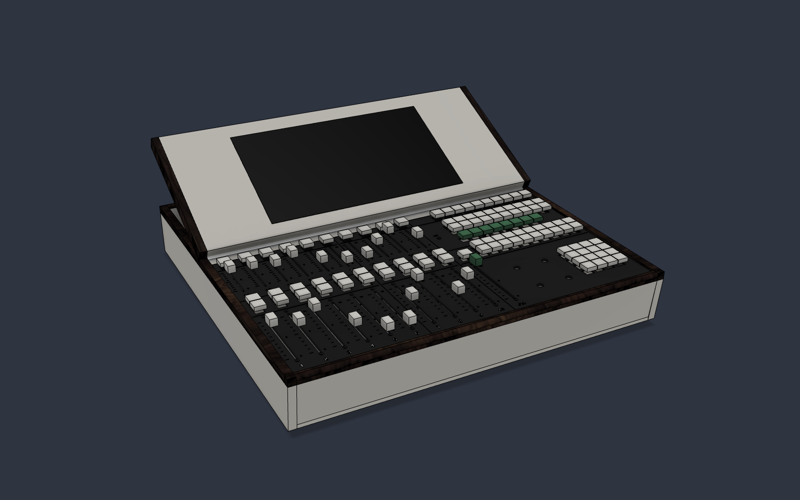
lichte romp, witte toetsen, groen accent
Naar de Braun SK4: licht metaal en hout, één groene knop als accent.
Het meest huiselijk en het meest Rams; in een kerkzaal valt hij op als meubel, niet als apparaat.
K3
Aluminium en oranje
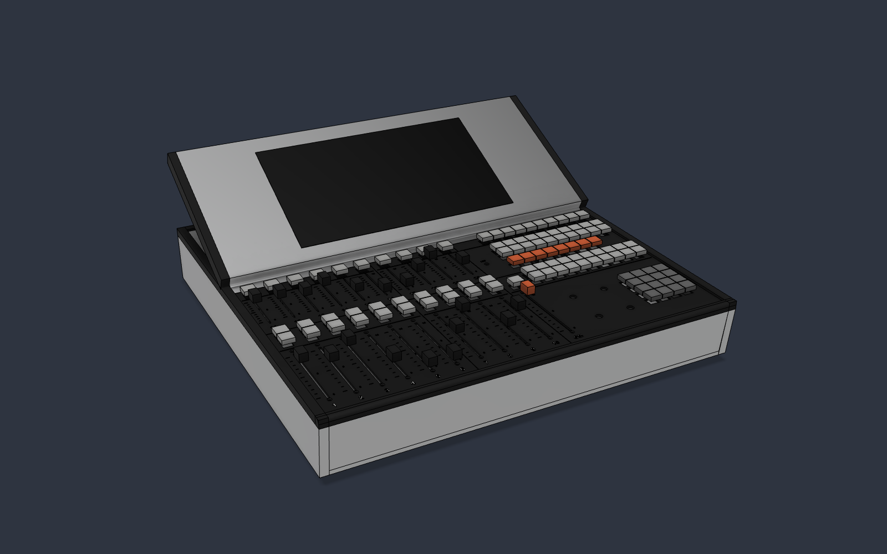
aluminium romp, zwarte lijst, oranje accent
Teenage Engineering: technisch en speels, zonder hout.
Een aluminium romp is in deze vorm lastiger te maken dan een geprinte of houten; het kan ook geprint in zilvergrijs.
Stap 3b · jouw keuze SB · uitgewerkt
De uitklapsteun in vier standen
De eerste schets zette de lage standen bijna op dezelfde tand. Nu scharniert de steun 115 mm achter het klepscharnier, is hij 85 mm lang en leunt hij naar achteren. De vier tanden liggen daardoor 15 tot 34 mm uit elkaar.
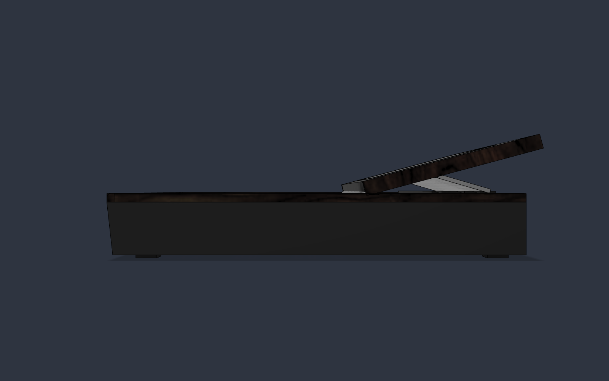
15°
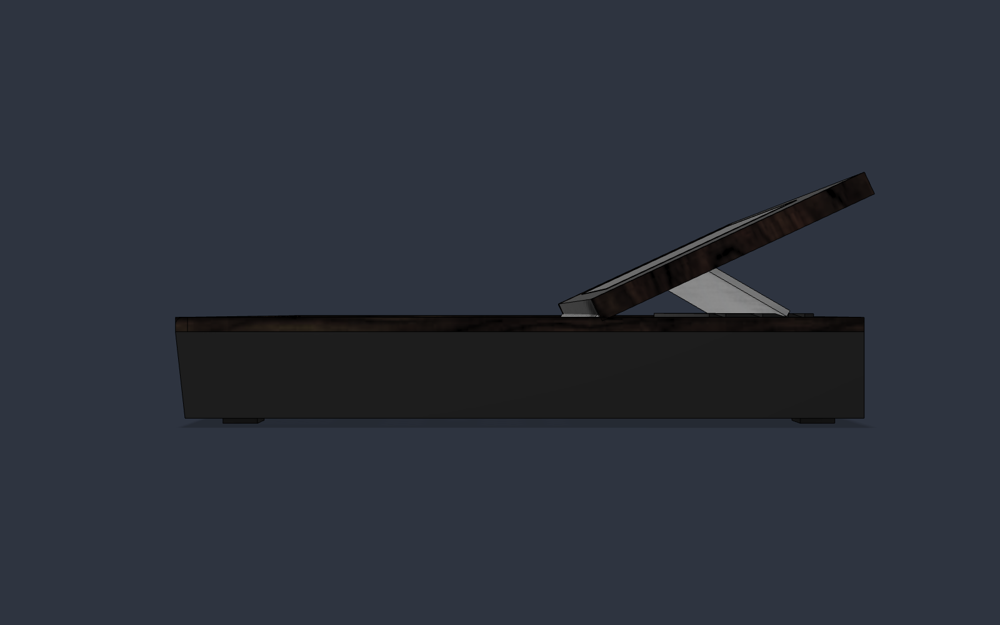
25°
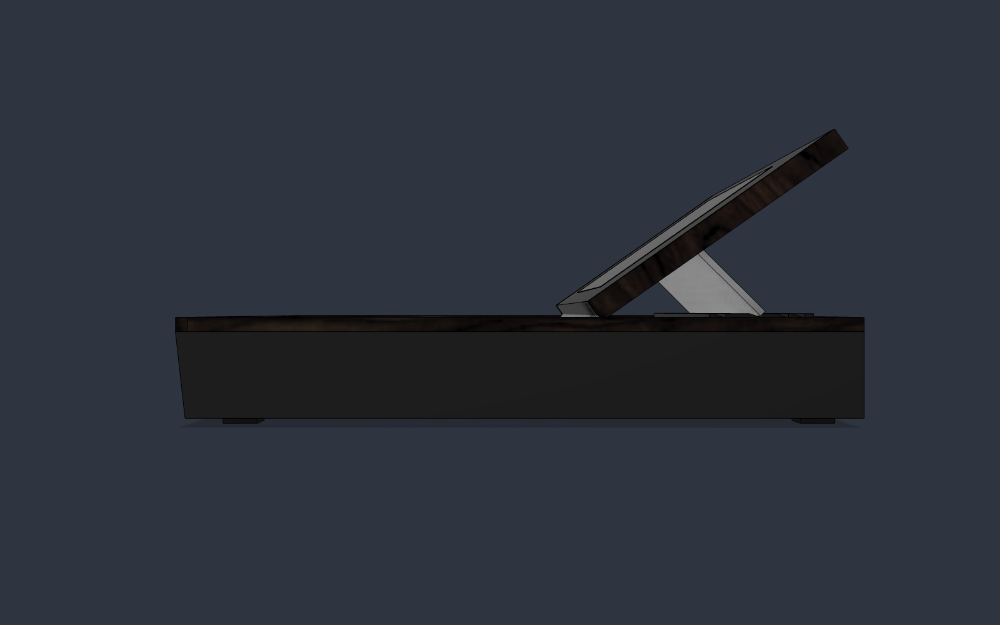
35°
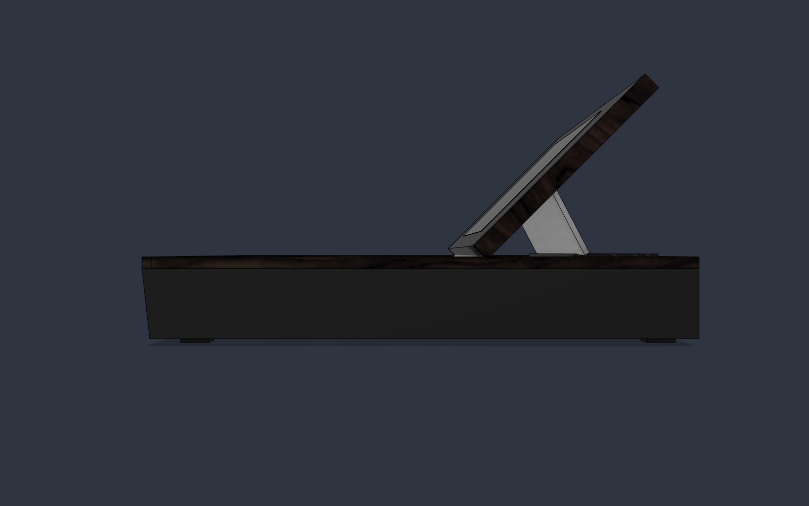
45°
tanden op 466 · 499 · 523 · 538 mm van de voorkantsteun 85 × 400 mm
De tandlat is een zaagtand: elke tand heeft zijn steile kant achter de voet, zodat een duw op het scherm de voet tegen de tand drukt en niet eruit.
Een vinger van 20 N bovenaan het scherm geeft hooguit zo'n 75 N in de steun (op 15°, waar hij het vlakst staat): licht werk voor aluminium.
Ingeklapt valt de steun plat tegen de onderkant van de klep, die dan op het dek ligt.
Nog uit te werken: de tandlat vrij van het scherm, de klep stil houden tijdens het verstellen (lichte frictie in het scharnier) en een rubber neus op de voet.
Stap 3 · jouw keuze M1 · schermsteun
Een steun die het scherm vasthoudt als je erop drukt
Frictiescharnieren alleen geven mee onder een vinger. Twee manieren om de klep vast te zetten, allebei op 25° getekend.
SA
Kwadrant met knop
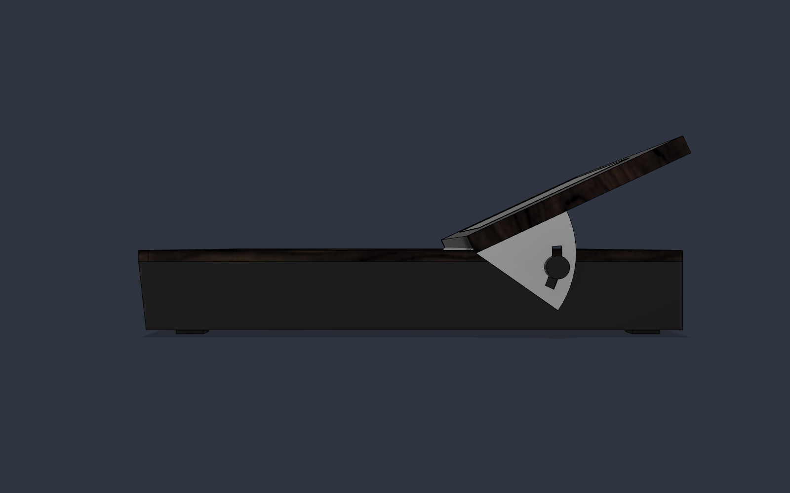
zijaanzicht
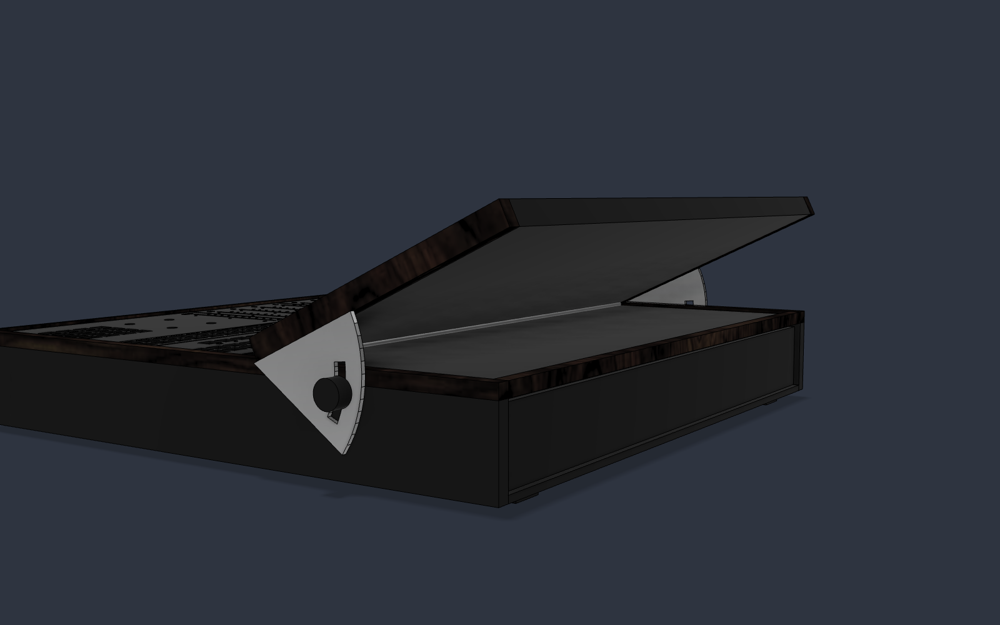
schuin van achteren
Aan elke kant een geborsteld aluminium kwadrant aan de klep, met een sleuf in een boog om het scharnier.
Een zwarte knop in de zijwand klemt het vast: traploos van 10° tot 40°.
Zichtbaar en eerlijk, zoals een Braun-apparaat laat zien hoe het werkt. Verstellen kost twee handen (twee knoppen).
SB
Uitklapsteun met tandlat
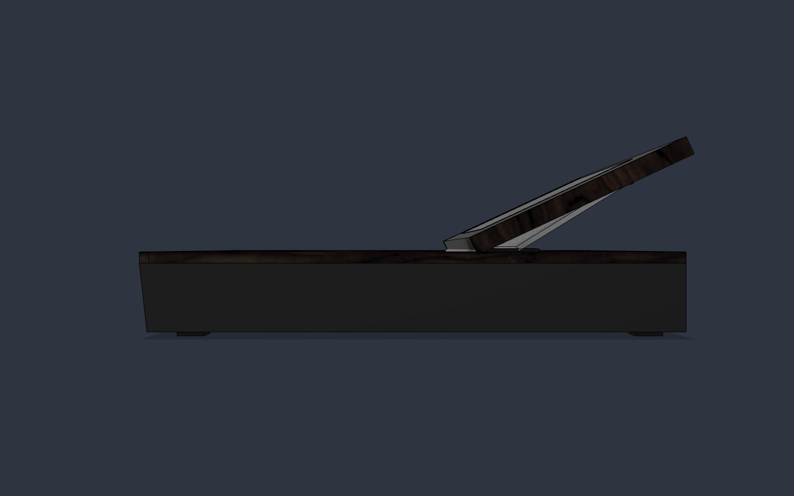
zijaanzicht
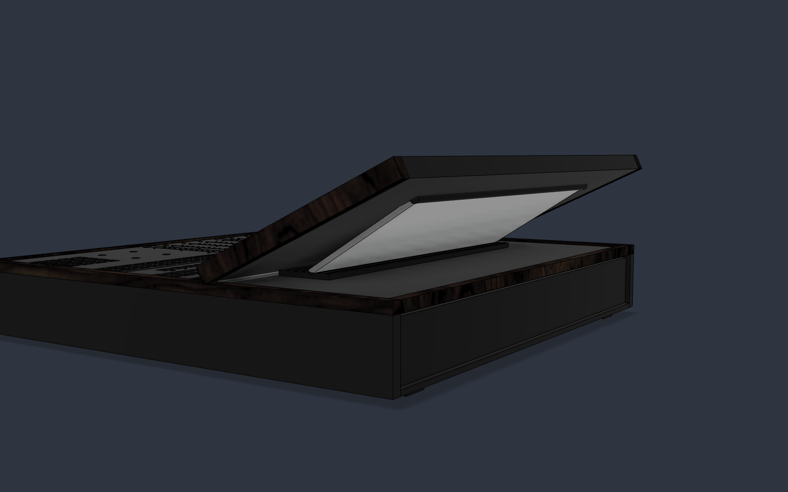
schuin van achteren
Een brede aluminium steun scharniert onder de klep en zakt met zijn voet in een tandlat op het dek.
Vaste standen (bijvoorbeeld 15°, 25°, 35°, 45°): de steun duwt recht tegen, er kan niets slippen.
Van voren en opzij bijna onzichtbaar; verstellen gaat met één hand, zoals een ligstoel.
Stap 2b · mengvormen van G en B
G met een kantelbaar scherm, op twee manieren
Beide houden de romp van G: zwart, smalle walnoten lijst, voorwand die naar de voet terugloopt. Ze verschillen in hoe het scherm kantelt.
M1
Platte G-romp met schermklep
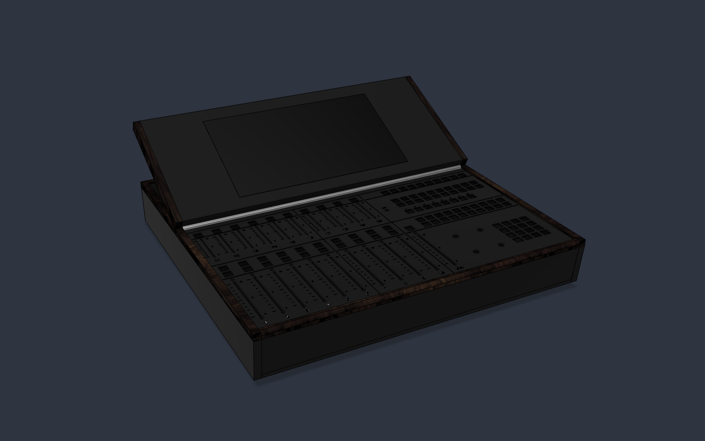
klep op 25°
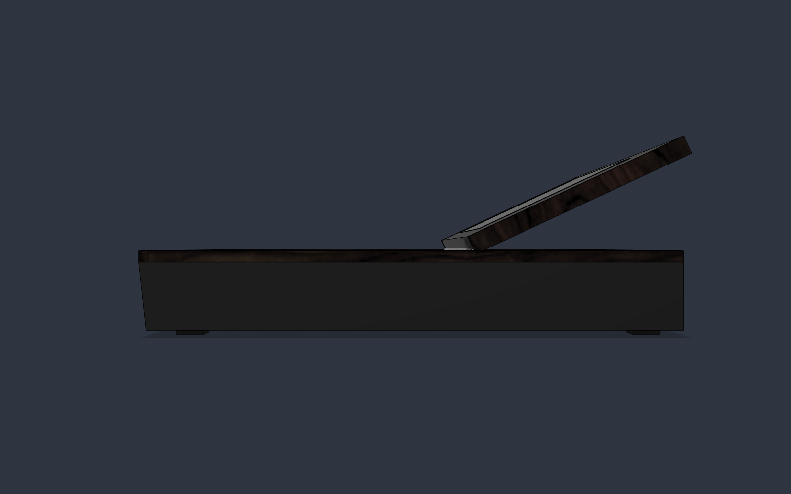
zijaanzicht
voorkant 92 mmdiepte 573 mmhoogte 213 mm bij 25°, 280 mm bij 45°
De romp is één platte doos; de walnoten lijst loopt rondom op één hoogte, ook achter.
Het scherm is de klep van B, met walnoten zijkanten, op frictiescharnieren van ongeveer 10° tot 45°.
Ingeklapt is de desk een platte koffer: past het makkelijkst in een flightcase.
M2
G, met kantelend schermdeel
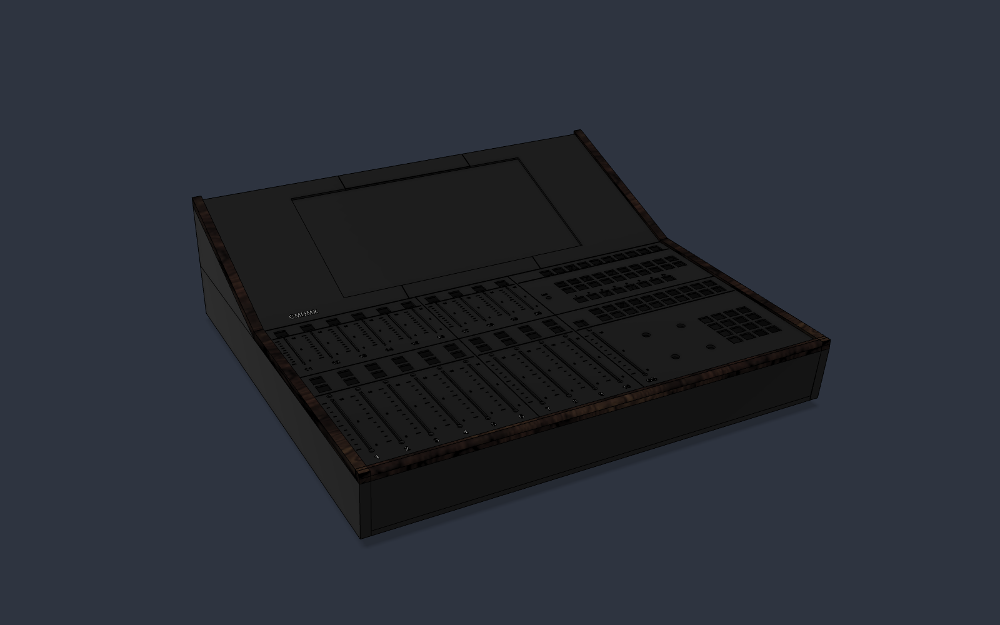
op 20°: precies G
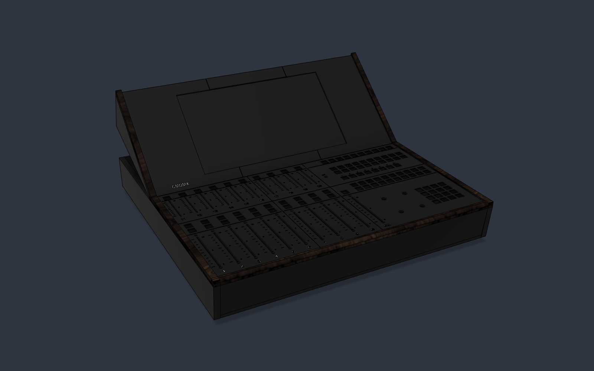
op 40°
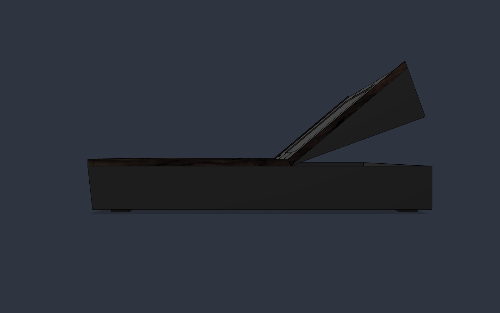
zijaanzicht op 40°
voorkant 92 mmdiepte 573 mmhoogte 179 mm bij 20°, 255 mm bij 40°
Op de normale stand is het G, met de doorlopende lijst van voor tot achter.
Het hele schermdeel, met zijwangen en lijst, scharniert aan de achterrand van het dek omhoog.
Gekanteld zie je een wigvormig zijvlak en een kier; dat is eerlijk, maar minder rustig dan M1.
Stap 2 · volumes · jouw keuze B en G
B en G als 3D-volume
Beide met het echte geprinte dek, antraciet en walnoot, gerenderd vanuit dezelfde camera's. Geen details, alleen de hoofdvorm.
B
Zwevende plaat, kantelbaar scherm
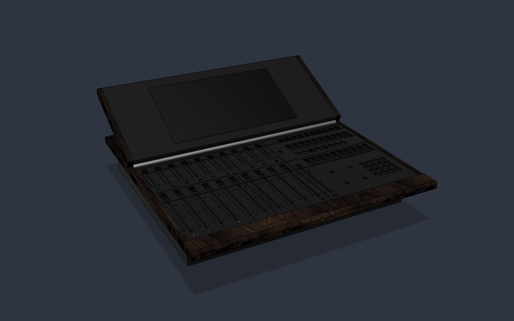
scherm op 25°
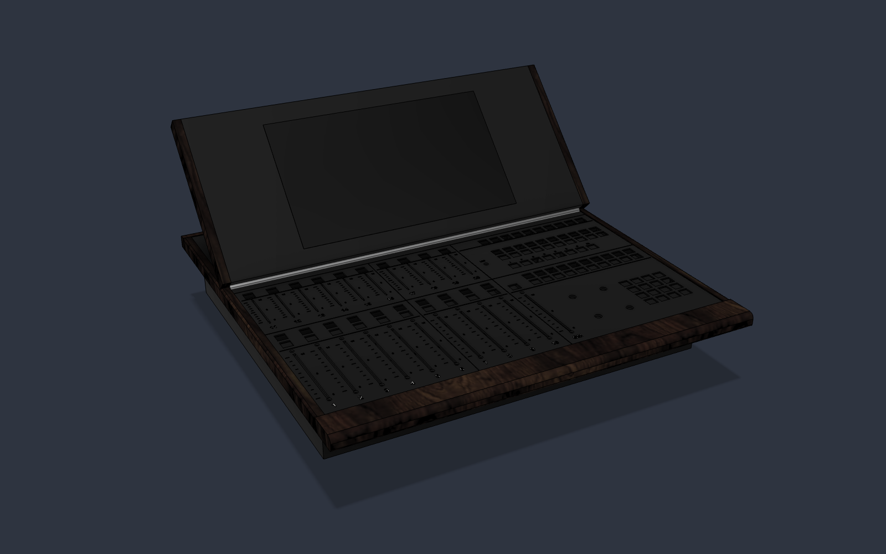
scherm op 45°
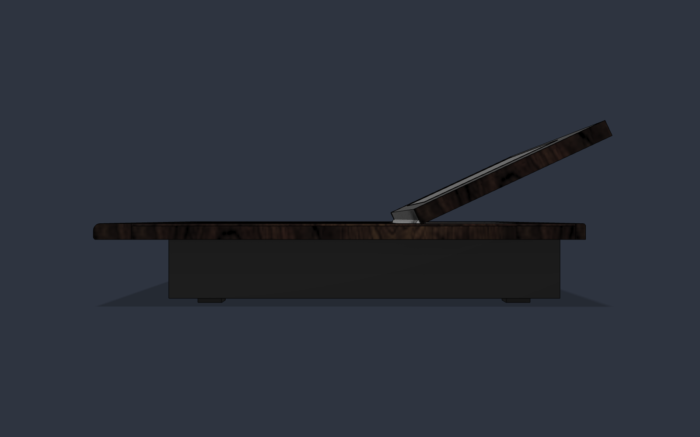
zijaanzicht
voorkant 99 mmdiepte 585 mmhoogte 222 mm bij 25°, 289 mm bij 45°
Eén plaat met walnoten rand van 12 mm rondom; de voorrand is 45 mm diep en dient als polssteun.
Het onderstel ligt 40 mm terug aan de voorkant en 10–25 mm aan de zijkanten en achter; de schaduw laat de plaat zweven.
Het scherm is een klep op een scharnier achter het dek, met frictiescharnieren van ongeveer 10° tot 45°.
De computer en de voeding zitten in het onderstel (72 mm hoog binnen).
G
Houten lijst, teruglopende voorkant
scherm vast op 20°
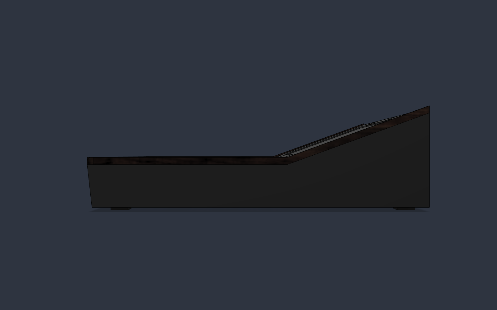
zijaanzicht
voorkant 92 mmdiepte 573 mmhoogte achter 179 mm
Zwarte romp met een walnoten lijst van 12 mm langs de bovenrand en over de voorkant.
De voorwand loopt naar de voet toe 8 mm terug, dus de desk lijkt aan de voorkant lichter.
Het scherm staat vast. Kantelbaar kan alleen als een klep zoals bij B, en dan breekt de doorlopende lijn.
Compacter en robuuster in een flightcase dan B.
Een mengvorm kan ook: B met de teruglopende voorkant van G op het onderstel, of G met de klep van B.
Brief (concept, vul aan)
Karakter (voorstel)
nuchterpreciesspeels
Nuchter en precies van Dieter Rams bij Braun, speels van Teenage Engineering. Klopt dit niet, vervang gerust een woord.
Ligt vast
Geprint dek 570 × 325, voorste rij 100 mm-faders, achter 60 mm
15,6″ touchscreen onder 15–25°
Hout mag, maar hoeft niet meer
Onder het dek ≥ 45 mm voor faders en printplaten, onder het scherm ruimte voor een Mac mini
Past in een flightcase; een mens tilt hem alleen
Open vragen
Dek plat of licht schuin (5–10°) naar je toe?
Polssteun vast deel van de vorm, of los?
Mag de desk achter hoog zijn, of liever laag zodat je erover kijkt?
Licht (Braun-grijs) of donker? In een donkere kerk weerkaatst een lichte desk meer.
Vormregels uit Rams en Teenage Engineering
Eén hoofdvorm. Geen sierlijsten of decoratie; de vorm volgt uit faders, toetsen en scherm.
Eén vaste radius overal, klein (bijvoorbeeld 3 mm), en rechte vlakken.
Raster. Alles op het 33 mm faderraster en het 19,05 mm toetsraster; dat heeft het dek al.
Kleur alleen met een functie. Eén accentkleur, bijvoorbeeld voor Go en de grand master; de rest grijs of zwart.
Technische typografie. Klein, kleine letters, monospace of grotesk, overal dezelfde maat.
Eerlijk materiaal. Print mag print zijn, hout is massief en plat, schroeven zichtbaar en netjes in het raster.
houtgeprint zwartterugliggend donker deelscherm
Kleur en materiaal: drie richtingen
Braun-grijs
Licht warmgrijze romp, zwarte bediening, dunne houten wangen, één groene of oranje accenttoets. Opdruk zwart op grijs. Het meest Rams, maar licht in een donkere zaal.
Aluminium en oranje
Zilvergrijs, zwart en wit met fel oranje voor Go en de grand master. Het meest Teenage Engineering. Zilver-PETG print mooi, hout valt weg of wordt heel klein.
Antraciet en walnoot
De huidige richting, maar strakker: antraciet print, platte walnoten wangen, witte opdruk, één oranje accent. Het best in een donkere kerk.